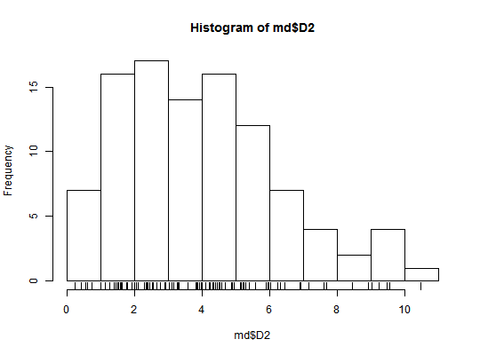

For N points, in M dimensions, get squared Mahalanobis distances to center.
mahalDistC(m, scale = TRUE, use = "complete.obs", center = "mean", ...)
| m | A data.frame or matrix. Observations in rows. |
|---|---|
| scale | If TRUE, scale variables before getting mahalanobis distances. |
| use | Observations to use in computing covariance matrix. Gets
passed to |
| center | Type of univariate center for each variable in |
| ... | additional arguments passed to
|
A list with additional class "mahalDist" containing elements:
D2: A vector of squared Mahalanobis distances for
observations (rows) in m. Incomplete observations return
NA.
vars: A character vector with the column names from
m.
dim: The number of columns of m.
For each of N points in M dimensions, get squared Mahalanobis distances to distribution centroid. This is useful for checking for outliers in a multivariate distribution. The squared Mahalanobis distances to center for an MV normal distribution with N dimensions will follow the chi square distribution with DF equal to N.
This function is a convenience wrapper around
mahalanobis, which see. Variables are
optionally scaled before distances are computed. Incomplete
observations will return NA.
m <- matrix(rnorm(400, m=.8, s=.05), nrow=100) md <- mahalDistC(m)#> [1] 4.6375e-16 4.1727e-16 1.6348e-16 1.5642e-16md$D2#> [1] 2.40054 4.31347 9.25604 1.98554 7.61675 2.09887 4.57182 4.09639 #> [9] 6.25086 9.04453 2.03773 4.34821 4.00210 7.69638 0.59005 7.16993 #> [17] 2.05689 4.00979 4.88153 2.44537 4.48852 0.22286 5.15968 0.55361 #> [25] 6.90280 3.91241 1.38314 1.74887 2.33875 4.23911 3.27649 8.92273 #> [33] 1.91062 6.23716 1.26601 1.60667 5.97740 2.32691 1.74811 3.97495 #> [41] 0.99241 9.47736 3.59071 3.82299 6.45567 10.47494 1.62064 1.00775 #> [49] 3.30610 5.95430 2.66221 0.41853 2.37971 3.14519 4.44519 2.76047 #> [57] 5.38855 8.45152 1.78675 3.03012 5.28690 3.87954 1.44125 2.89909 #> [65] 5.14162 5.28791 9.54870 2.53941 1.13589 3.10756 2.36058 6.02671 #> [73] 5.24068 2.36896 2.51134 4.88814 5.90288 3.27399 0.98276 5.59106 #> [81] 5.57480 3.84445 4.39095 2.27947 0.73374 4.93693 6.93263 6.31856 #> [89] 3.01314 1.49792 1.91406 1.58311 4.67472 1.53094 4.21212 7.15577 #> [97] 5.20578 2.91152 3.09831 4.53538hist(md$D2)rug(md$D2)